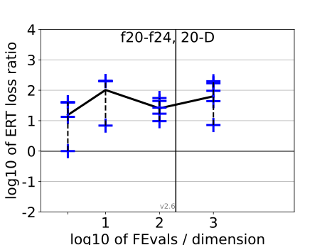
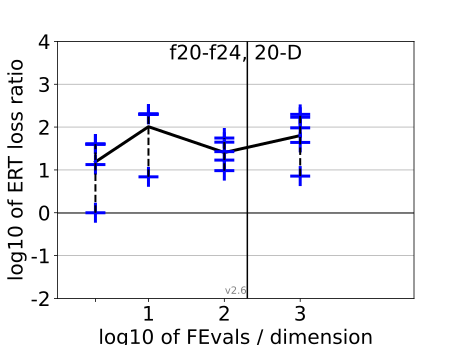

{kind=link}
{kind=link}
{kind=link}
{kind=link}
{kind=link}
{kind=link}
{kind=link}
{kind=link}
{kind=link}
{kind=link}
 
All functions in 5-D and 20-D
f1–f24 in 5-D, maxFE/D=804
| #FEs/D | best | 10 % | 25 % | med | 75 % | 90 % |
|---|---|---|---|---|---|---|
| RLUS/D | 8e2 | 8e2 | 8e2 | 8e2 | 8e2 | 8e2 |
| 2 | 0.85 | 1.3 | 2.0 | 3.3 | 5.5 | 10 |
| 10 | 2.9 | 3.3 | 4.4 | 5.9 | 8.6 | 50 |
| 100 | 7.0 | 8.8 | 13 | 16 | 22 | 95 |
| 1e3 | 3.1 | 4.4 | 14 | 35 | 64 | 1.2e2 |
| 1e4 | 30 | 31 | 56 | 1.6e2 | 4.2e2 | 7.7e2 |
f1–f24 in 20-D, maxFE/D=201
| #FEs/D | best | 10 % | 25 % | med | 75 % | 90 % |
|---|---|---|---|---|---|---|
| RLUS/D | 2e2 | 2e2 | 2e2 | 2e2 | 2e2 | 2e2 |
| 2 | 1.0 | 5.5 | 13 | 40 | 40 | 40 |
| 10 | 4.8 | 6.8 | 10 | 67 | 2.0e2 | 2.0e2 |
| 100 | 6.6 | 7.8 | 14 | 25 | 52 | 2.7e2 |
| 1e3 | 7.2 | 37 | 50 | 94 | 2.4e2 | 2.5e3 |
Separable functions in 5-D and 20-D
Misc. moderate functions in 5-D and 20-D
Ill-conditioned functions in 5-D and 20-D
Multi-modal functions in 5-D and 20-D
Weak structure functions in 5-D and 20-D
ERT loss ratios (see the previous figure for details). Each cross (+) represents a single function, the line is the geometric mean.{kind=link}